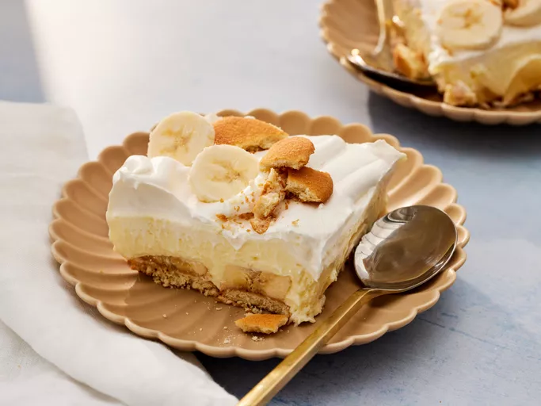

Torta de Banana

Descrição
Essa receita que vamos preparar é uma torta de banana, recheada com doce leite e raspas de canela por cima.
Ingredientes
- 3 bananas maduras amassadas
- 1/2 xícara de açúcar
- 1/4 xícara de manteiga
- 1 ovo
- 1 colher de chá de extrato de baunilha (opcional)
- 1 xícara de biscoito de leite triturado
- 1/4 xícara de manteiga derretida
- 400g de doce de leite
Etapas
-
Pré-aqueça o forno a 180 graus Celsius
-
Em um recipiente, misture o biscoito triturado com a manteiga derretida atpe formar uma farofa úmida. Pressione essa farofa no fundo de
uma forma torta de 23cm, pressionando bem para formar uma base uniforme. Reserve.
-
Em uma tigela média, misture as bananas amassadas, o açúcar, a manteiga, o ovo e o extrato de baunilha (se usar). Se desejar adicione o leite
condensado cozido e as especiarias escolhidas. Misture bem até obter um creme homogêneo.
-
Despeje o recheio de banana sobre a base do biscoito. Alise a superfície com uma espátula.
-
Leve ao forno pré-aquecido por 30-35 minutos, ou até que o recheio esteja firme e dourado.
-
Retire do forno e deixe esfriar completamente antes de servir